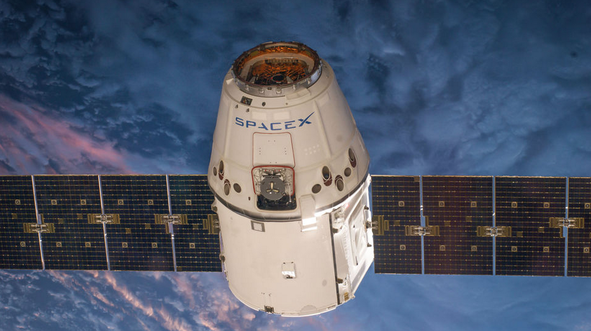
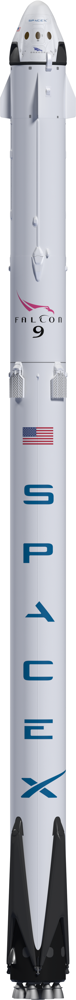
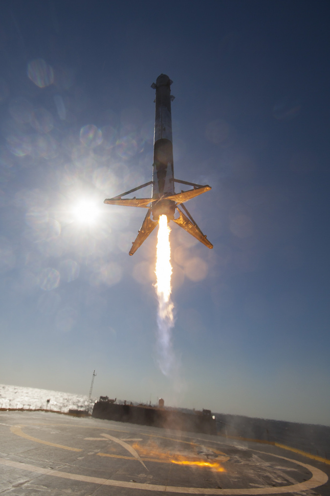
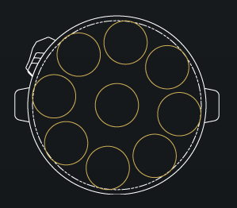
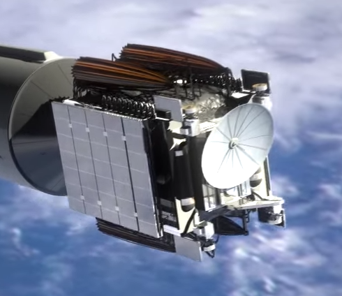
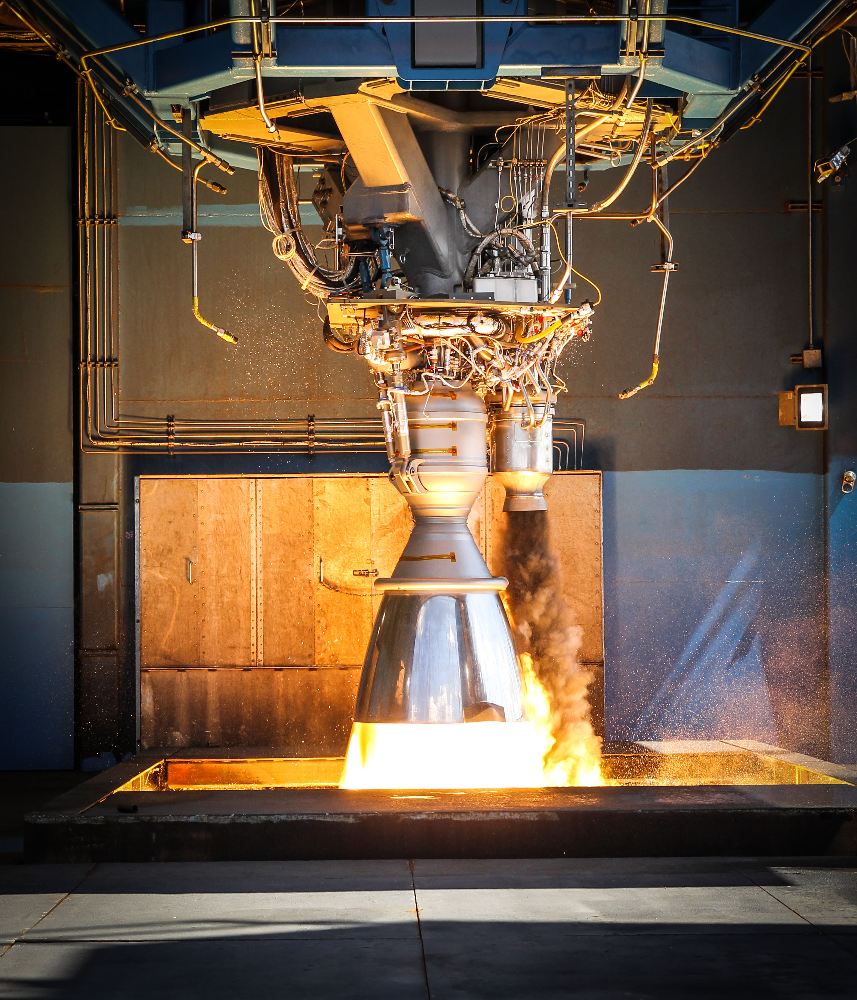
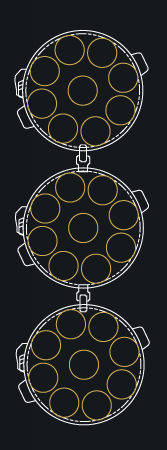

Falcon 9 / Falcon Heavy
A SpaceX nevezetű céget Elon Musk alapította azzal a végcéllal, hogy olyan technológiát állítson elő, amivel az emberiséget Multi-planetáris fajjá teheti. Azt szeretné, ha az ember mihamarabb kolóniát alapítana a Marson. Ennek számos problémáit az előző oldalon taglaltam, ugyanakkor az egyik nagy probléma még mindig az odajutás. Mint említettem még nem rendelkezünk elég nagy rakétával, ami oda tudna vinni minket. Ebből adódóan a SpaceX egyik célja – ami sokáig megvalósíthatatlan volt – hogy, olyan rakétát, űrrepülőgépet építsenek, ami többször felhasználható, így költséghatékonyabb a folyamat, és nem kell mindig hatalmas rakétákat építeni újra és újra. Sok szenvedés és kudarc után megszületett a SpaceX Falcon 9-es rakétája, ami a történelmet írt, mivel az első többször felhasználható rakéta. Ez úgy érték el, hogy a rakéta első része (ami a légkör elhagyásáért felelős) vertikálisan visszazuhan, és landol.
SpaceX Falcon 9 RakétájaA világ első rakétája, ami visszatér az űrből, két fokozatból áll. A Második fokozat maga a Booster ami felviszi, és pályára állítja az első fokozatot. Az Első fokozathoz van rögzítve a műhold, vagy a szállítmány, amit a megfelelő pályára állít. Ha szállítmányt visz a nemzetközi űrállomásra, akkor a cég Dragon űrkapszulája szolgál űrhajóként. A rakétát 9 Merlin Hajtómű hajtja, ami 8300 Kg -ot képes eljuttatni geostacionárius pályára. A Hatóművek összesen 7,607 kilo newton erőt fejt ki. Eddig a legújabb Falcon 9 (FT) rakéta típus 16/16-szor tért vissza a Földre sikeres küldetés után. |
A Rakéta szállítmánya, a Dragon Űrkapszula |
 |
Visszatérő Booster |
||
A 9 Merlin Hajtómű keresztmetszete |
SpaceX Falcon Heavy RakétájaA Falcon Heavy, három F9-es rakéta modulból áll. Ebben az esetben a két oldalsó modul, hozzá van erősítve egy módosított, erősebb maghoz, hogy kibírja a terhelést. A rakéta még nem volt bevetve éles használatnak, de javában zajlanak a tesztelések (2017). Ha elkészül, akkor a jelenleg használt létező legerősebb rakéta lesz ami képes eljutni akár a Holdig is. A Rakétát 27 db Merlin hajtómű hajtja, ami lehetővé teszi a rakétát, akár 63 tonnányi tömeg megemelésére is. |
A Rakéta szállítmánya, egy átlagnál nehezebb műhold/űrkapszula |
 |
A rakétát hajtó Merlin hajtóművek egyike, tesztelés alatt |
||
A 21 Merlin Hajtómű keresztmetszete |
A legtöbb sikertelen landolási kísérlet
Hossz: 2:09 perc, 19MB
A SpaceX számtalan landolási kísérlettel próbálkozott, éveken keresztül. Elon Musk Postolta ezt a videót a "How not to land an orbital rocket booster" névvel azaz röviden: Hogyan ne landoljunk egy rakétával... A videón jól látszik mekkora károkat szenvedett a cég, és mennyit szenvedett mire sikerrel jártak.
A Videón bemutatott kisérletek, hibák: (leírás)
- 2013 Sept - Hard impact on ocean
- 2014 April - First soft water landing
- 2014 July - Second soft water landing
- 2014 August - Engine Sensor Failed
- 2014 September - Ran out of liquid oxygen
- 2015 January - Ran out of hydraulic fluid (Technically, it did land...just not in one peace)
- 2015 April - Sticky throttle valve (It's just a rapid unscheduled disassembly)
- 2016 January - Landing Leg Collapsed (Entropy...is such a lonely word)
- 2016 Marc - Landing burn failed (The course of true love never did run smooth)
- 2016 May - Radar Glitch (Landing legs demaged)
- 2016 June - Ran out of propellant
- 2015 December - First successful Land landing
- 2016 April - First successful droneship landing (You are my everything)